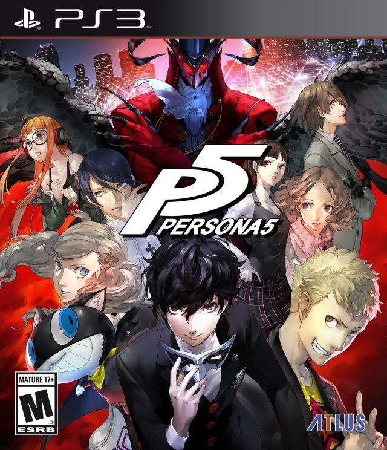
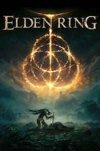
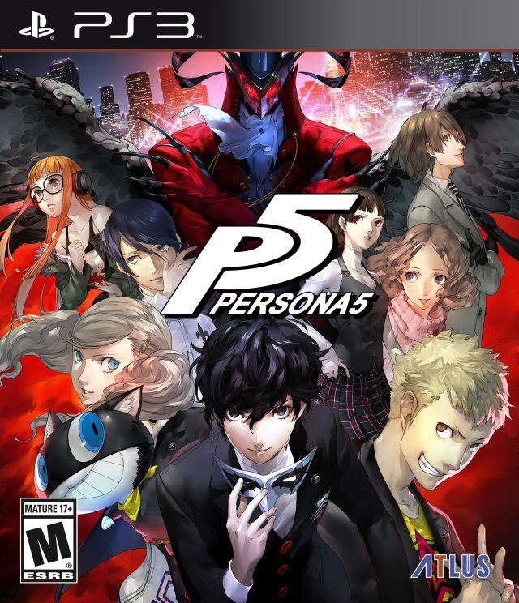
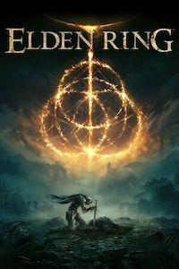

Glad to see you're still here, this is the chill page. After all of the work, its only right to relax and tune into a streaming site for shows and movies. Phoebe uses a variety of subscription based apps like Netflix, Crunchyroll, Max, Hulu, and Disney plus for a wide range of programs she likes to watch. Phoebe may enjoy watch something as wholesome and nostalgic as Monster's Inc. but also has time for post-apocalyptic movie plots like This Is The End. Her mood interest varies and changes often, and Phoebe tends to browse through many apps but eventually settles on watching something that either makes her laugh or keeps her engaged through plot twists or appealing character developments. All of the tv shows and movies displayed on this page are on Phoebe's bookmarked lists on each respective streaming app.
 



Phoebe is a variety gamer and plays different genres of games through consoles and pc. Here are only a few from the many choices that she chose to narrow down. She finds joy through games that allow the player to create and customize their characters like building an entire island on Animal Crossing on Nintendo Switch. On the other hand, Phoebe also likes games with a competitive aspect to challenge her like various story mode games or online ranked fighting games. She plays games very casually grouped up with friends or cousins, and for her it's nice to have that adrenaline rush for gaming at times to occupy some time while online.